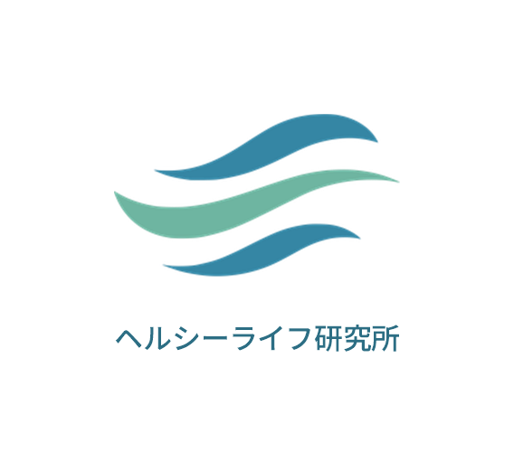
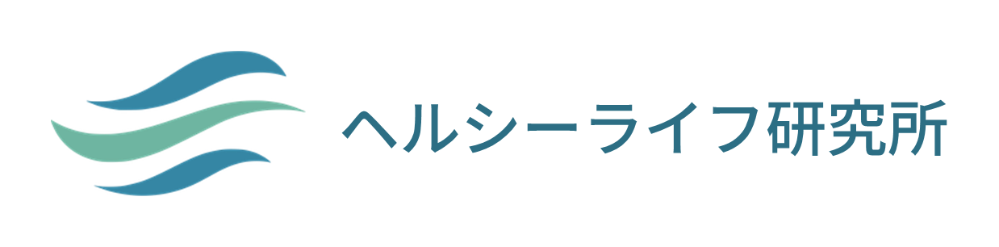
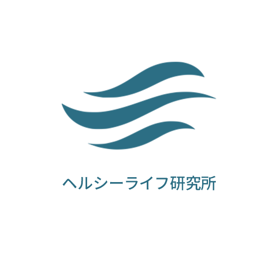
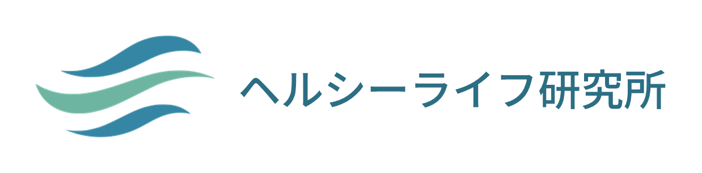
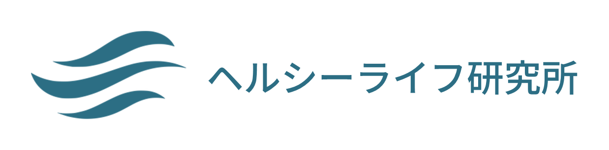
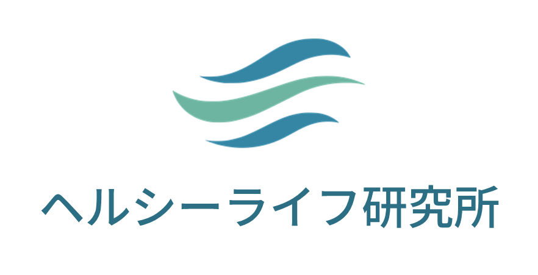
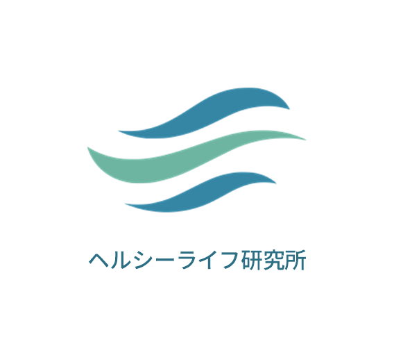

パッケージ用lockup-package-color.png
マークの下に社名。社名はマークと同じ幅。パウチ・化粧品・白衣。
Corporate Identity · Reference
ロゴ・色・付け方・使用見本を1か所にまとめた参照用ページです。写真の生成（ChatGPT）、印刷物、サイト制作のときに、ここにあるロゴと見本をそのまま使ってください。

マークは「上から青・緑・青」の3本の波。社名は Noto Sans JP Medium で組んだ「ヘルシーライフ研究所」の10文字です。どの場面でも、このファイルを使い、描き直しません。

マークの下に社名。社名はマークと同じ幅。パウチ・化粧品・白衣。

上と同じ形のディープティール1色。のれんの染め、スタンプ。

マーク（2色）の右に社名。受付サイン、案内。

マークも社名もディープティール。段ボール、紙袋、スタンプ。

深緑のエプロン（白い刺しゅう）、ガラスのシート、濃い色の面。

社名をマークより広く組んだ縦組み。現在はパッケージ用を優先。
ブランド色は3色。布・木・壁の色は「素材の色」として使い、ロゴの色にはしません。
ロゴは小さく、周りを広く空けます。面の大部分は無地のままにします。

≥ H≥ H点線の内側には何も置きません。H はマークの高さ。ファスナー・小窓・縁・ポケット・えり・縫い目・のれんの切れ目に近づけないでください。
ロゴは物の上に「貼る」のではなく、その素材の作り方で付けます。写真では面の角度・光・しわに沿わせます。
左が CI の見本、右がサイト（v5）で実際に使っている写真です。写真をクリックすると拡大します。
ChatGPT で作った見本画像の一覧です。写真を作るときは、写る物の見本を添付します（1枚につき3枚まで）。クリックで拡大します。
ロゴは「会社の物」として自然にある場所だけに入れます。
確認中：白衣とエプロンのロゴは、安藤さんの最終確認を待っています。以前の方針（案B）は「パッケージとオフィス・店舗のサインだけ」でした。
「ガラス・木・緑」で、どれも主張しすぎない量に。大きな窓からのやわらかい自然光、温かみのある白。
約50% 壁と床
ウォームホワイトの壁、明るい床。明るさと清潔感。
約30% 明るいオーク材
受付カウンター、机、棚、壁の木のパネル。
約10〜20% ガラス
細い黒またはオークの枠の仕切り。奥まで見通せる。
約10% 植物
鉢植えを数か所。壁一面の緑にはしない。
ブランド色（ティール・シーグリーン）は、クッション・ファイル・マグカップなどにほんの少しだけ。
見本や写真ができたら、この順に確認します。
注意：ロゴファイルは 256px のロゴ画像から作っています。正式な印刷物には、元のデザインデータ（AI・SVG）から作り直してください。